內容導向
首頁以主題 Banner、猜你會喜歡、最新上架與熱門內容組成，重點在於把知識內容包裝成容易點擊、容易連續觀看的內容流。
QuBear 將量子科學與科普內容包裝成可探索、可收藏、可互動、可獎勵的行動學習體驗。整體設計以「量子超級英雄」為世界觀核心，搭配 Q-Coins、成就任務、主題商城與 Dark Mode，讓知識內容不只是被觀看，而是形成可持續回訪的探索旅程。
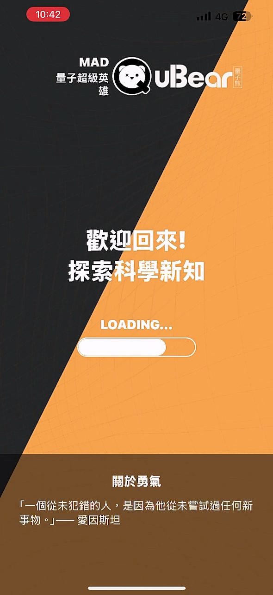
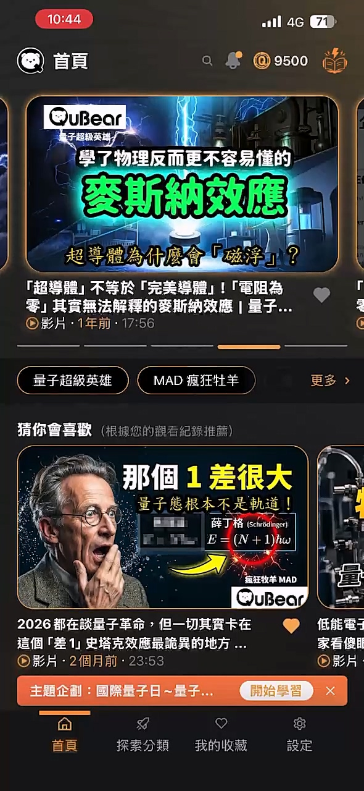
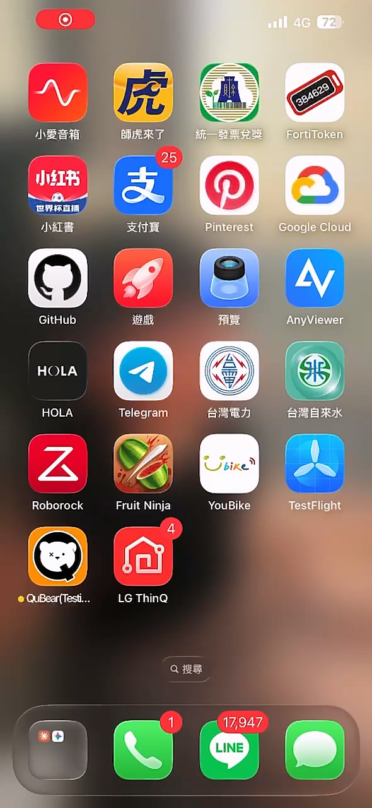
QuBear 的介面不是單純內容列表，而是將影音、分類、標籤、獎勵、成就、商城與個人化外觀整合在同一套體驗中。使用者進入 APP 後，會被引導到內容流，透過興趣標籤與推薦機制瀏覽影片，再透過收藏、互動表情、學習完成與 Q-Coins 形成回訪動機。
首頁以主題 Banner、猜你會喜歡、最新上架與熱門內容組成，重點在於把知識內容包裝成容易點擊、容易連續觀看的內容流。
探索頁提供熱門標籤、熱門主題與依類型瀏覽，讓使用者不必只靠首頁推薦，也能主動進入量子物理、國科會、MAD 系列等內容集合。
觀看完成後可以透過「我學會了」獲得 Q-Coins，並進一步帶動成就、兌換、商城 Skin 與 Dark Mode 解鎖。
QuBear 的內容呈現使用影音平台常見的「卡片式內容流」，再加上教育型 APP 所需的分類與標籤結構。使用者可以被首頁推薦吸引，也可以依照主題、標籤、內容型態切入。
首頁包含大型輪播卡、橫向推薦、最新上架與熱門內容。畫面視覺使用高對比縮圖、標題、影片類型、上架時間、片長與收藏按鈕，使內容可快速被理解，並具備接近影音平台的瀏覽節奏。
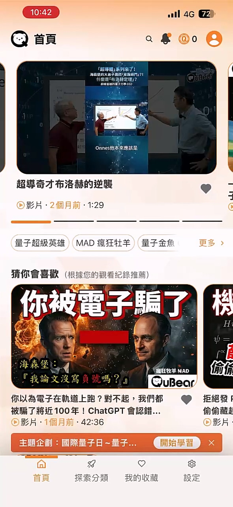
探索頁將內容拆成熱門標籤、熱門主題與內容類型。這種設計能兼顧兩種需求：一種是輕鬆滑內容的使用者，另一種是想針對量子物理、量子熊、國科會或特定系列進行系統化探索的使用者。
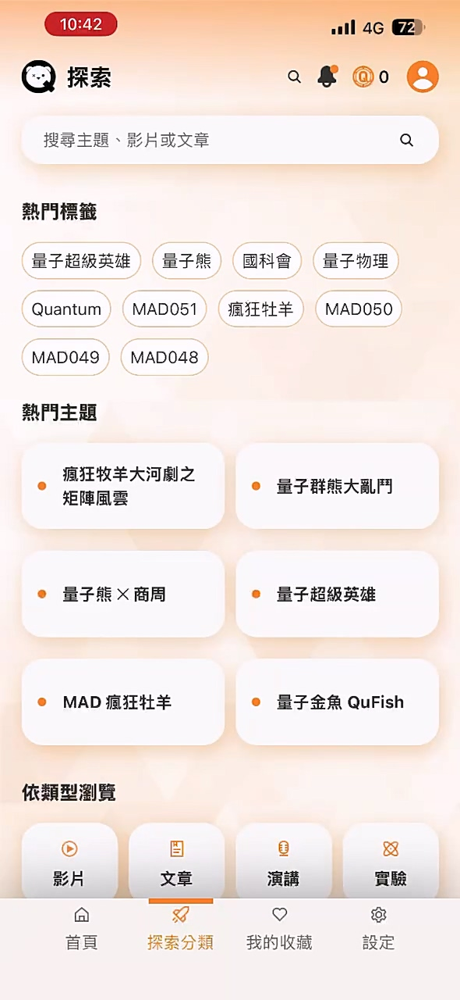
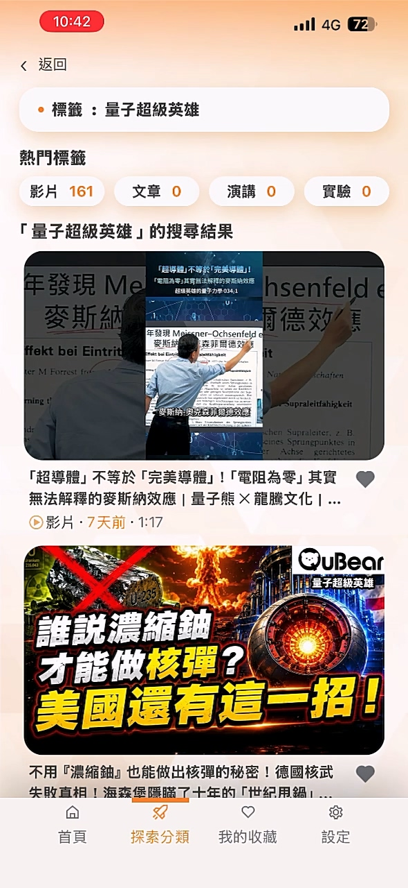
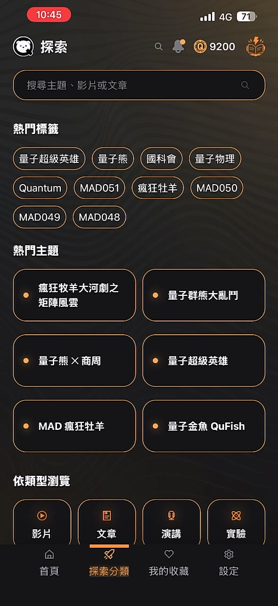
影片頁是 QuBear 的核心學習場景。介面整合播放器控制、影片標題、完成學習、互動表情、收藏、分享與下一支推薦，使觀看行為可以被轉化成學習紀錄與平台互動。
播放器提供進度列、倒退/快進、暫停播放、下一支與全螢幕等控制，支援科普影音內容的基本觀看需求。
表情浮動動畫讓觀看過程具有即時參與感，適合強化活動型內容、直播式內容或短影音內容的熱度。
影片下方設計「接下來播放」推薦，讓單次觀看自然延伸為連續學習與主題探索。
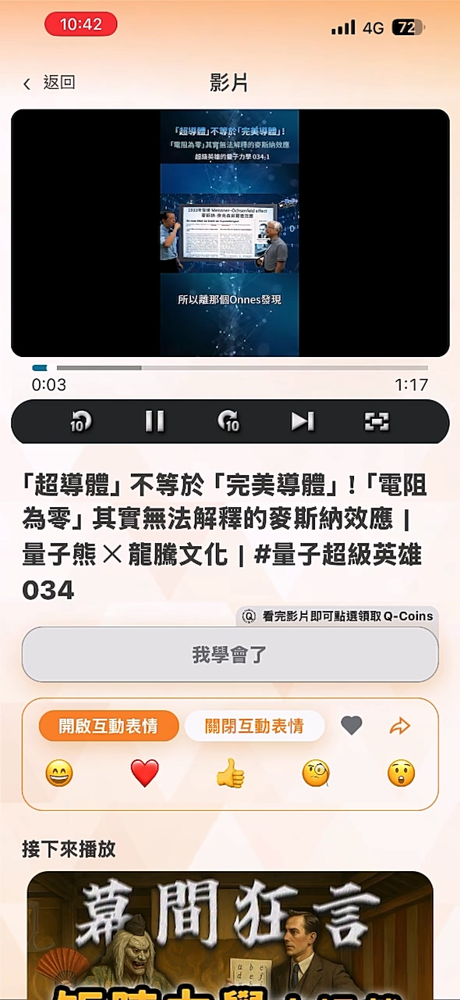
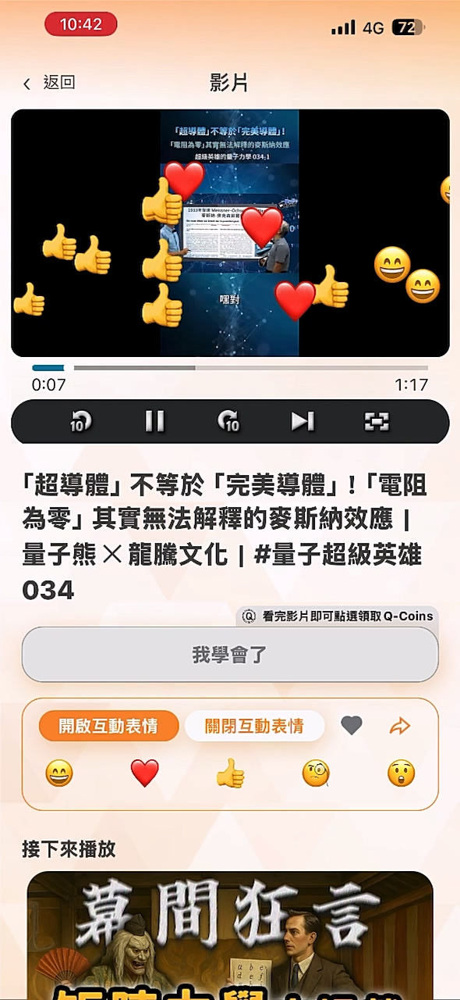
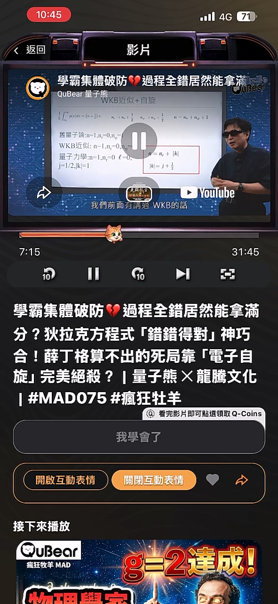
QuBear 的學習激勵不是只做簽到或打卡，而是在影片觀看完成後，以明確的完成按鈕、慶祝畫面、Q-Coin 獎勵與回饋問卷形成正向閉環。這套設計讓使用者知道自己完成了一段學習，也讓平台能累積內容成效回饋。
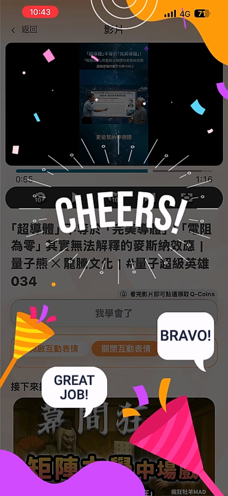
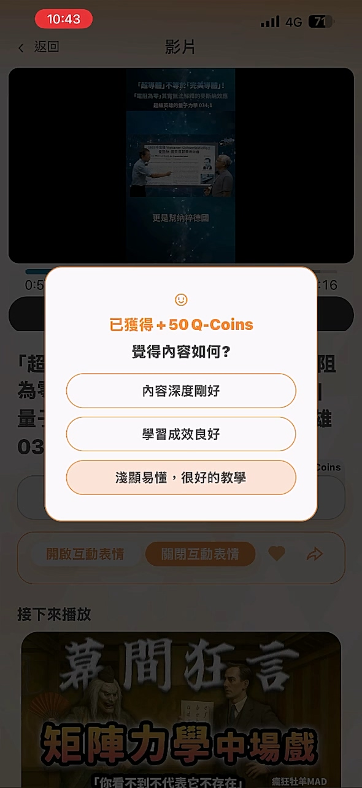
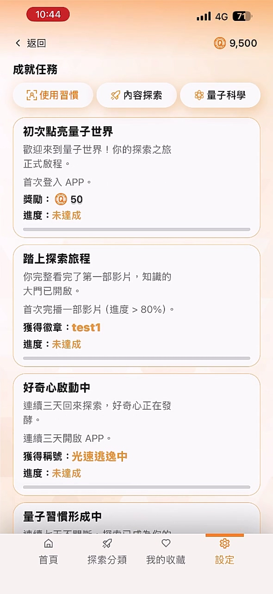
登入與會員系統是後續紀錄、收藏、成就與 Q-Coin 經濟的基礎。QuBear 支援多種登入方式，並透過會員中心呈現稱號、暱稱、代幣、成就與兌換紀錄。
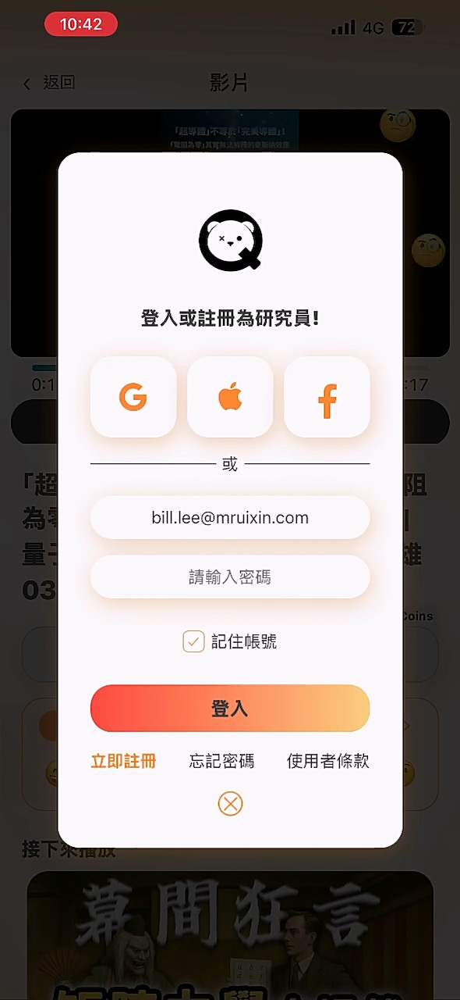
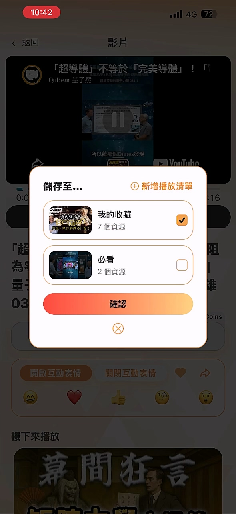
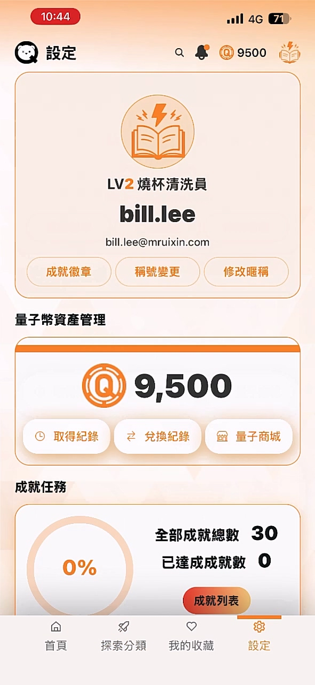
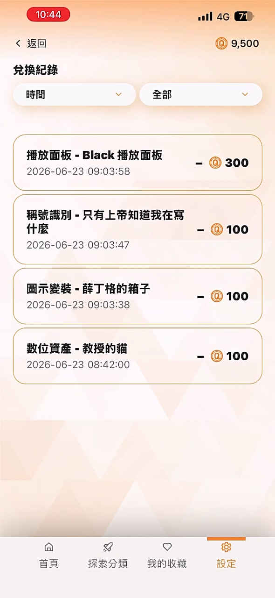
QuBear 的 Q-Coin 不只是數字獎勵，而是能兌換或購買 APP 內的視覺資產。從圖示變裝、稱號識別、介面彩蛋，到 Dark Mode 與播放框 Skin，形成具收藏感的個人化系統。
暗黑模式以「科技橘光點綴 × 深黑背景」呈現，能強化沉浸感，也讓主題本身成為可兌換的數位商品。
商城內可購買圖示、角色、稱號、啟動畫面與播放框等視覺資產，使使用者的學習成果能被轉化為可展示的個人風格。
透過會員中心與兌換紀錄呈現餘額、取得與消耗，有助於建立完整的代幣流向與使用者信任。
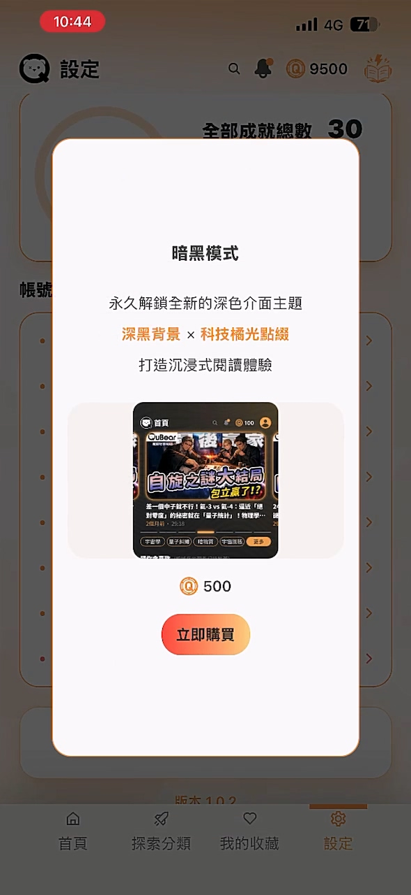
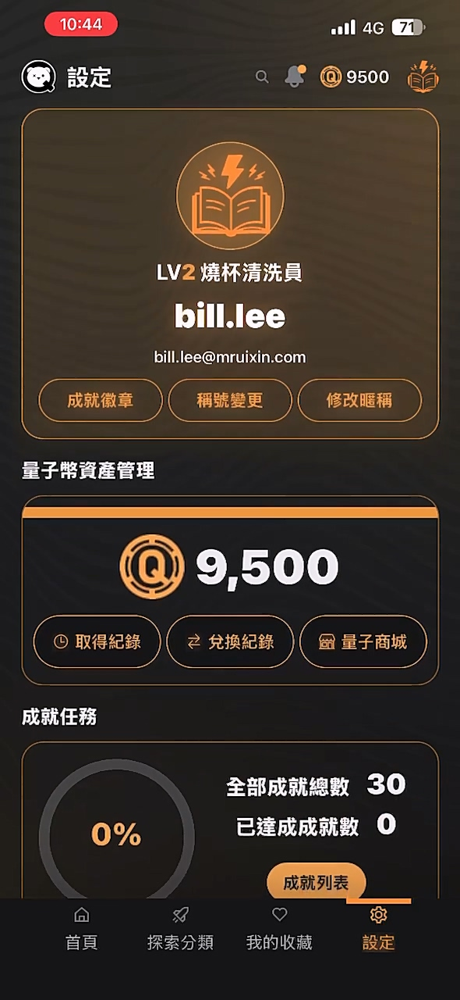
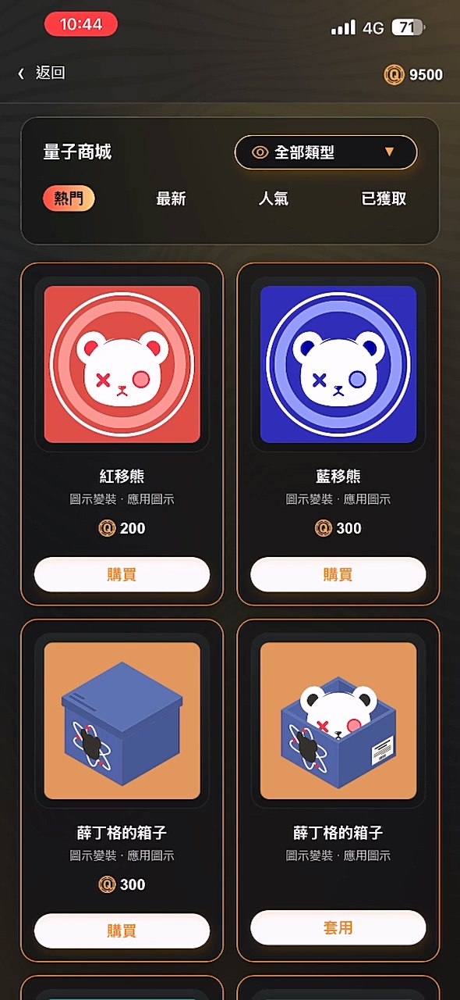
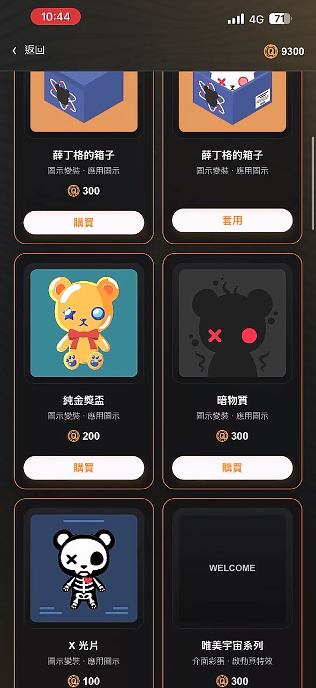
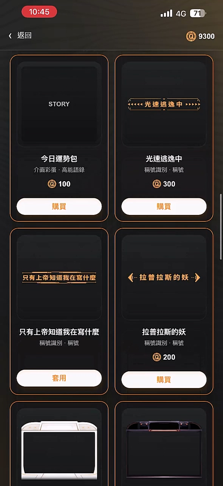
以下為本說明書引用的完整截圖索引。圖片路徑皆使用 image/原始檔名，並保留原檔名不做更動，方便放入報告素材資料夾後直接引用。